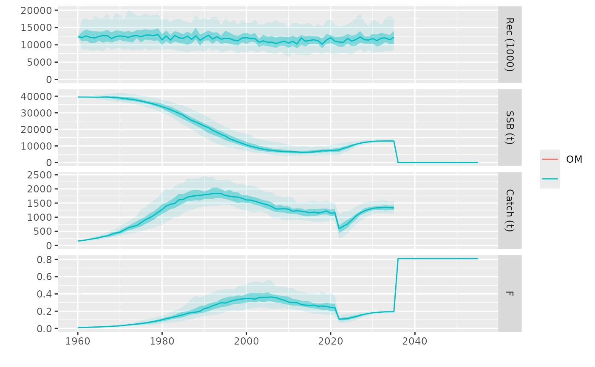

The tunebisect function is designed to tune a single parameter of a single
modules in a Management Procedure (MP), typically in the Harvest Control Rule (hcr).
It uses a bisection algorithm to iteratively adjust the parameter value unitl it
achieves specified probability value for a given management objective overn a
selected time frame. For example, it can try to find a value for the target
argument of a hocketstick.hcr that obtains a 60% mean probability of SSB being above
SSBMSY over the 2032 to 2042 period.
tunebisect(
om,
oem = NULL,
control,
statistic,
metrics = NULL,
args,
tune,
prob = 0.5,
tol = 0.01,
maxit = 12,
years = ac(seq(args$iy + 1, args$fy - 1)),
verbose = TRUE,
...
)An object representing the Operating Model, of class FLom or FLombf.
Observation Error Model, class FLoem or missing, the default.
A control object containing the settings and parameters for the Management Procedure, class mpCtrl.
A named list of length 1 defining the statistic used for tuning. The list must include:
The name of the statistic.
The formula used to compute the statistic.
A description of the statistic.
Optional. A set of metrics used for performance evaluation; defaults to NULL to use the default metrics for the class of the om object.
A list of arguments for running the Management Procedure. Must include iy (initial year).
A named list specifying the parameter of the HCR to tune and its range. The list must include the parameter name and the minimum and maximum values as a vector of length 2.
The target probability for tuning; defaults to 0.5. Must be a value between 0 and 1.
Tolerance for the difference between the computed and target probabilities; defaults to 0.01.
Maximum number of iterations, defaults to 12.
Two initial MP runs are carried out employing the argument values provided in tune.
They need to return probabilities that are on both sides of the expected one. If not,
the function will return both runs for inspection. The function should then be rerun
with an wider range of values, or the time-frame extended.
Burden, Richard L.; Faires, J. Douglas (2016), "2.1 The Bisection Algorithm", Numerical Analysis (10th ed.), Cenage Learning, ISBN 978-1-305-25366-7
# dataset contains both OM (FLom) and OEM (FLoem)
data(sol274)
#> Warning: namespace ‘dplyr’ is not available and has been replaced
#> by .GlobalEnv when processing object ‘om’
#> Warning: namespace ‘TMB’ is not available and has been replaced
#> by .GlobalEnv when processing object ‘om’
#> Warning: namespace ‘remotes’ is not available and has been replaced
#> by .GlobalEnv when processing object ‘om’
#> Warning: namespace ‘shiny’ is not available and has been replaced
#> by .GlobalEnv when processing object ‘om’
#> Warning: namespace ‘htmlwidgets’ is not available and has been replaced
#> by .GlobalEnv when processing object ‘om’
#> Warning: namespace ‘xtable’ is not available and has been replaced
#> by .GlobalEnv when processing object ‘om’
#> Warning: namespace ‘FLAssess’ is not available and has been replaced
#> by .GlobalEnv when processing object ‘om’
#> Warning: namespace ‘FLSRTMB’ is not available and has been replaced
#> by .GlobalEnv when processing object ‘om’
# choose sa and hcr
control <- mpCtrl(list(
est = mseCtrl(method=perfect.sa),
hcr = mseCtrl(method=hockeystick.hcr, args=list(lim=0,
trigger=41500, target=0.27))))
# load statistics
data(statistics)
tun <- tunebisect(om, oem=oem, control=control, args=list(iy=2021, fy=2035),
tune=list(target=c(0.15, 0.35)),
metrics=list(SB=ssb), statistic=statistics['PSBMSY'], years=2025:2034)
#> [1] target: 0.15
#> [1] diff: 0.46, prob: 0.96
#> [2] target: 0.35
#> [2] diff: -0.11, prob: 0.39
#> [3] target: 0.25
#> [3] diff: 0.28, prob: 0.78
#> [4] target: 0.3
#> [4] diff: 0.079, prob: 0.58
#> [5] target: 0.325
#> [5] diff: -0.004, prob: 0.5
# Plot tuned MP
plot(om, tun)
#> Warning: Removed 4500 rows containing non-finite outside the scale range
#> (`stat_fl_quantiles()`).
#> Warning: Removed 4500 rows containing non-finite outside the scale range
#> (`stat_fl_quantiles()`).
#> Warning: Removed 4500 rows containing non-finite outside the scale range
#> (`stat_fl_quantiles()`).
